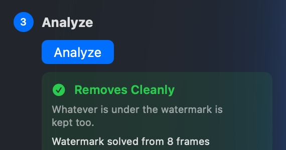
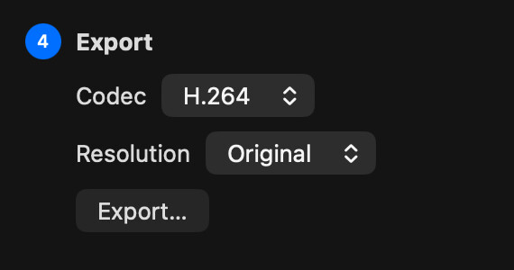
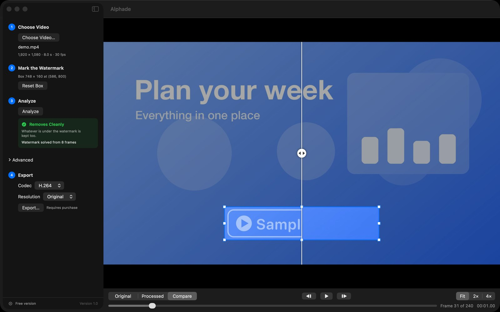

Encadrer le filigrane
Ouvrez une vidéo et tracez un cadre autour du filigrane.
Alphade supprime les filigranes semi-transparents de vos vidéos et restaure l’image qui se trouvait dessous, directement sur votre Mac.
Télécharger pour MacGratuit · macOS 26 ou version ultérieure
 Original
Alphade
Original
Alphade
Restauré, pas flouté
Flouter un filigrane laisse une tache. Alphade détermine comment le filigrane a été mélangé à chaque image et inverse l’opération : l’image qui se trouvait dessous revient intacte.


Comment ça marche

Ouvrez une vidéo et tracez un cadre autour du filigrane.

Alphade étudie toute la vidéo et vous indique dans quelle mesure il peut la restaurer.

Enregistrez une copie nette en H.264 ou HEVC, en taille réelle ou réduite.
Avant l’export
Comparez l’original et le résultat côte à côte, avancez image par image et zoomez jusqu’à 4×. Seule la zone encadrée change ; le reste de l’image et le son restent tels quels.

Rien n’est envoyé en ligne et aucun compte n’est nécessaire. Alphade ne collecte aucune donnée. Consultez la politique de confidentialité (en anglais).
Analyse, aperçu et export sans frais : aucun achat, aucune limite d’essai, aucun abonnement. Le téléchargement est signé avec un Developer ID et notarié par Apple.
Fonctionne le mieux avec les filigranes semi-transparents qui restent au même endroit. Voir les vidéos compatibles (en anglais).
Télécharger pour MacOu avec Homebrew : brew install --cask vulcanshen/tap/alphade